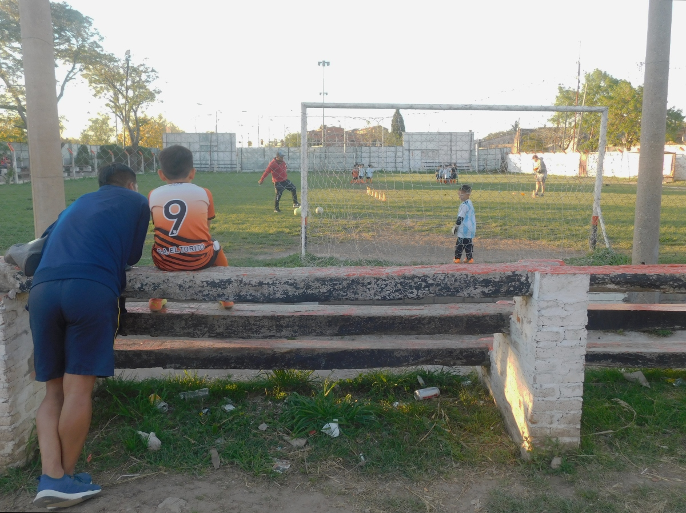
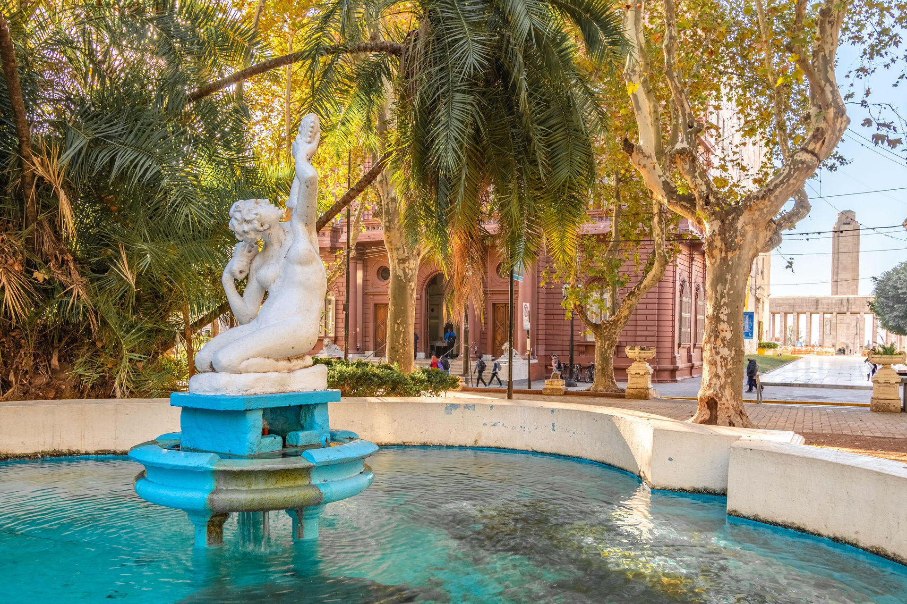
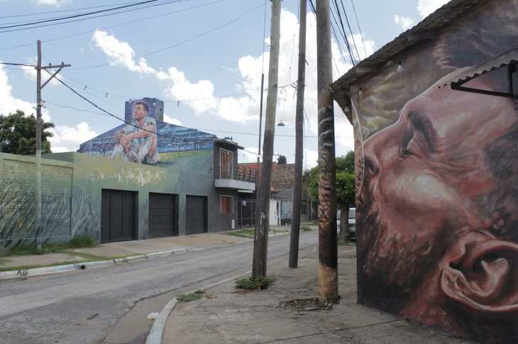
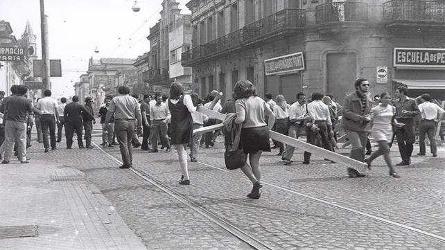
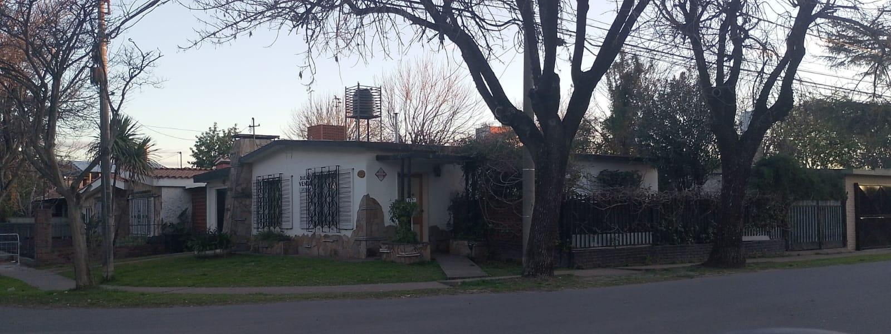
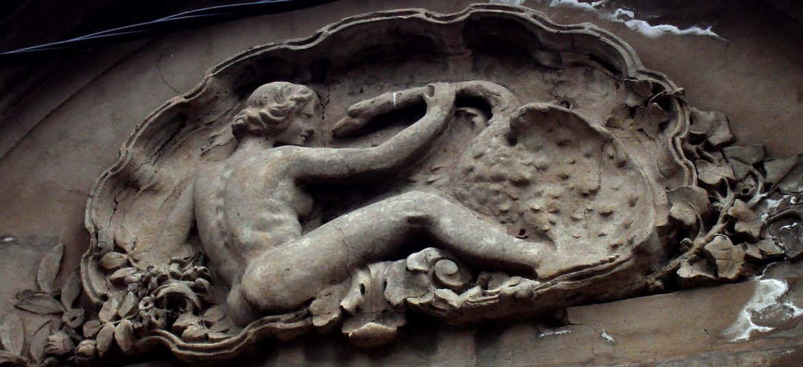

Fútbol y barrio
Carbonero de Ilusiones
El recorrido natal por el barrio de Ángel Di María: infancia, club, pertenencia y sueños que salieron de Rosario al mundo.
Tiempo estimado: una hora El Mago de los Tours
Rosario a la Carta
WhatsApp
El Mago de los Tours
Rosario a la Carta
WhatsApp
Rosario, Santa Fe
Rosario a la Carta
Recorridos guiados para mirar la ciudad con otros ojos. Soy Ignacio Ariel Martinez: guía turístico y mago, y llevo historia, barrios, patrimonio y un poco de asombro a cada salida.
Tu guía
Soy guía turístico en Rosario y también mago. Esa mezcla explica la página: cada recorrido busca revelar lo que suele quedar escondido a plena vista.
Las salidas se realizan en espacios públicos y se coordinan por agenda: barrios, monumentos, fútbol, memoria, arquitectura y relatos rosarinos para grupos abiertos.

Catálogo de experiencias

Fútbol y barrio
El recorrido natal por el barrio de Ángel Di María: infancia, club, pertenencia y sueños que salieron de Rosario al mundo.
Tiempo estimado: una hora
Centro histórico
Una lectura del corazón fundacional de Rosario y su vínculo con el Monumento, la plaza cívica y los edificios históricos.
Tiempo estimado: dos horas
Fútbol y origen
Recorrido por el barrio natal de Lionel Messi, entre relatos de infancia, potrero, club y memoria popular.
Tiempo estimado: dos horas
Patrimonio barrial
La rica historia y el patrimonio cultural de Alberdi, antiguo pueblo con una historia vibrante y única, a casi un siglo y medio de transformaciones.
Tiempo estimado: una hora y media
Memoria reciente
Del estallido social del Rosariazo a los juicios que todavía se siguen llevando adelante por los hechos de la última dictadura.
Tiempo estimado: una hora y media
Símbolo nacional
La historia viva del Monumento: secretos, arquitectura y el legado de quienes lo soñaron y construyeron.
Tiempo estimado: una hora
Arquitectura
Palacetes, bulevares, esculturas y rastros de una Rosario que quiso mostrarse moderna, elegante y pujante.
Tiempo estimado: una hora y media
Barrios
Una caminata por trazas, pasajes y vida cotidiana para entender una zona pensada como barrio jardín.
Tiempo estimado: una hora
Ciudad elegante
Casonas, tiendas, cafés, instituciones y detalles arquitectónicos de una de las postales urbanas más queridas.
Tiempo estimado: una hora y media
Historia urbana
Historias del barrio Pichincha, hoy Alberto Olmedo: vida nocturna, transformaciones urbanas y personajes inolvidables.
Tiempo estimado: una hora y media
Historia y memoria
Un recorrido para descubrir mujeres que dejaron huella en la identidad política, cultural y social de la ciudad.
Tiempo estimado: una hora y mediaAgenda y cupos
La agenda es para salidas especiales con fecha y cupo definidos. Para recorridos habituales, usá el botón Reservar de cada recorrido.
Seña
Para pagos digitales, el alias es magonacho. Enviame el comprobante por WhatsApp y te confirmo el punto de encuentro.
Enviar comprobanteReservas locales
Comunidad


Usuarios
Creá una cuenta para dejar reseñas asociadas a tu usuario.
Reseñas
Las reseñas se guardan en Firebase.
Las reseñas aprobadas aparecerán acá.
Contacto directo
Escribime para consultar por agenda, puntos de encuentro, seña o recorridos. Recordá: las salidas se realizan en espacios públicos.
El punto de encuentro se informa al reservar. Si abonás en efectivo, aparece en el formulario; si abonás por transferencia, te lo confirmo cuando me envíes el comprobante.
{kind=link}